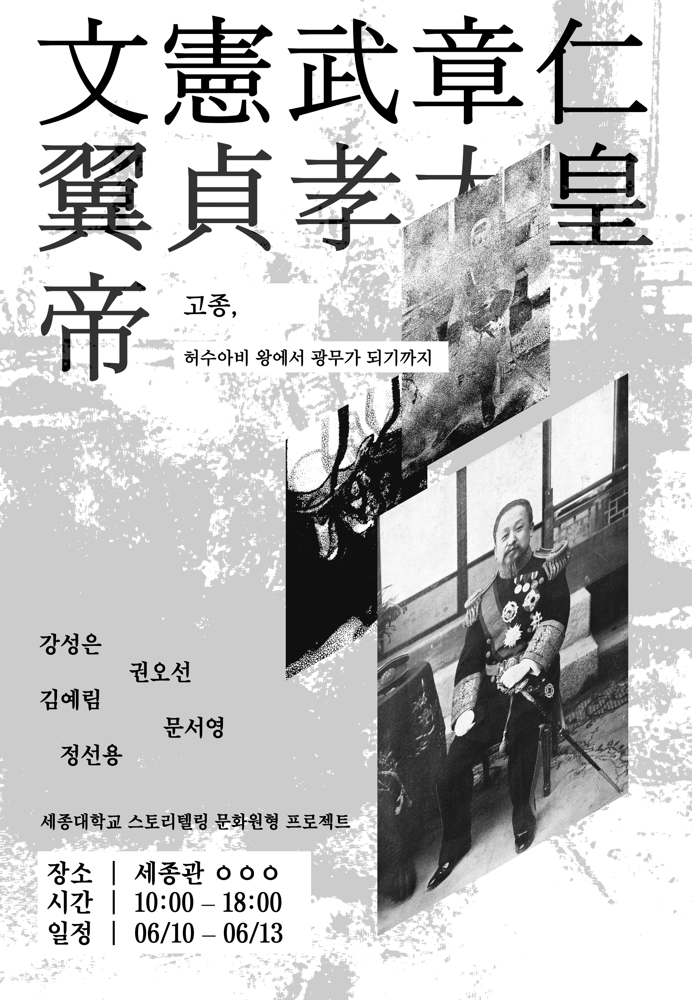

강성은 권오선 김예림 문서영 정선용
고종 심리테스트
당신이 고종이었다면 어떤 선택을 했을까요?
심리테스트 하러 가기 →전시 포스터
기획의도
<고종, 허수와비 왕에서 광무가 되기까지> 전시는 한 시대를 살아낸 한 인간, 고종의 내면을 들여다보는 여정입니다. 격변하는 근대사의 격류 속에서 왕이라는 무거운 이름 뒤에 숨겨진 불안과 고뇌, 그리고 변화의 몸부림을 조명합니다. 역사의 굵직한 사건들 사이에 가려진 고종의 마음 한 켠을 들여다보며, 그가 겪은 혼돈과 갈등, 그리고 스스로 새롭게 태어나고자 했던 의지를 담담히 마주합니다.
허수아비처럼 흔들렸던 순간들도, 광무라는 새로운 자아를 향해 뚜벅뚜벅 나아가던 시간들도 모두 한 인간의 삶의 깊은 흔적입니다. 이 전시는 그 흔적을 따라가며, ‘역사’라는 거대한 이야기 속에서 개인의 목소리가 어떻게 울려 퍼지는지, 우리 모두가 품어야 할 질문을 건넵니다. 과거가 오늘을 비추듯, 고종의 이야기는 현재를 사는 우리에게도 살아 숨 쉬는 의미를 선사합니다.
전시 내용
전시는 배우 윤산의 독백 연기를 중심으로 고종의 삶을 한 편의 드라마처럼 펼쳐 보입니다. 윤산은 고종의 복잡한 감정과 시대의 무게를 섬세하게 담아내며, 관객과 직접 대면하듯 내밀한 이야기를 전합니다. 왕권을 둘러싼 정치적 혼란과 개인적 고뇌가 교차하는 순간들을 시간의 흐름에 따라 흡입력 있게 재현합니다.
관객은 영상과 음향, 조명으로 완성된 공간 속에서 고종의 흔들림과 결단을 온몸으로 느끼며 그 시대의 무게를 체감할 수 있습니다. 허수아비로 불렸던 시절과 광무로 다시 태어난 시절이 교차하며 한 인간의 깊은 내면을 비추고, 역사의 거대한 물결 속에 숨겨진 ‘나’와 ‘우리’의 이야기를 만나게 됩니다. 고종의 이야기는 결국 우리 모두가 마주하는 변화와 성장, 그리고 자신을 찾아가는 여정이기도 합니다.